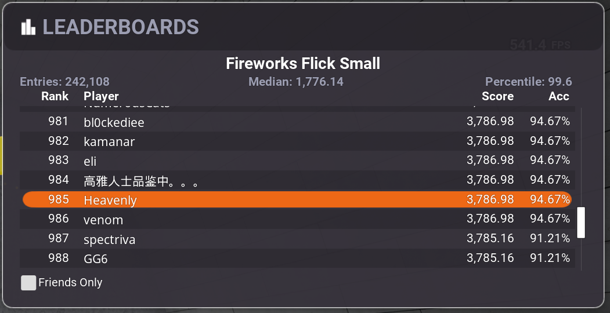
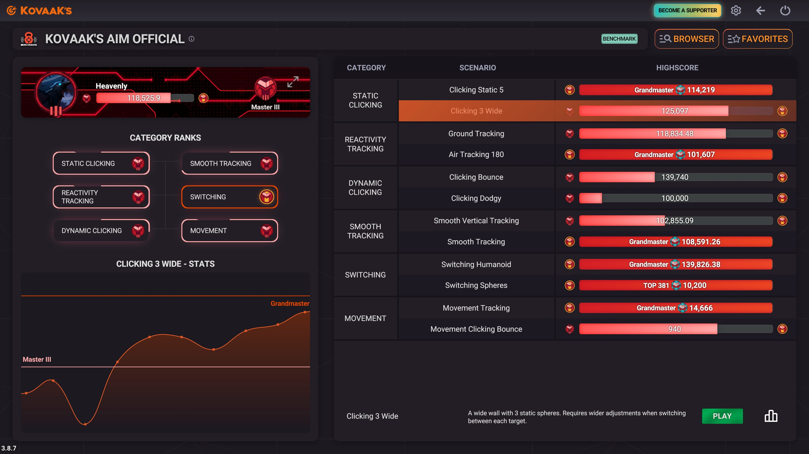
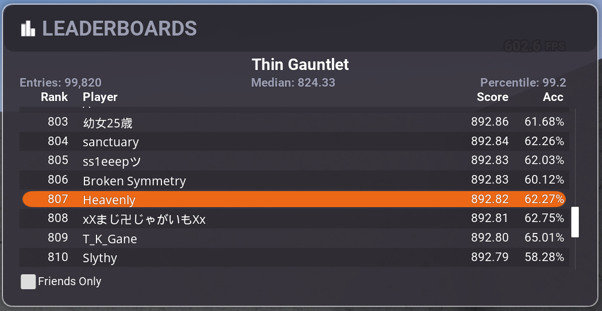
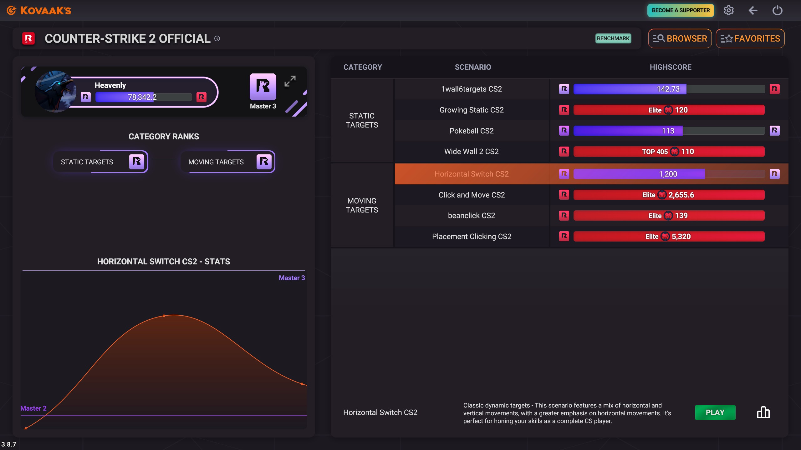

With consistent practice and dedication, I can lead you to scores like the two you can see on either side. I'll walk you through how to get an ideal sensitivity and cover important mouse settings. It's important to note that what your expectations and goal should be adaptable as everyone learns at their own pace.
Enough about me and what I have achieved; let's go over what you can do to start today. I'm not going to promise some large amount of improvement right away, but I do promise you'll improve and gain the skills needed for future improvements. In order to follow my advice, you will need access to the KovaaK's FPS aim trainer and the basic ability to copy and paste the playlists I'll provide.

